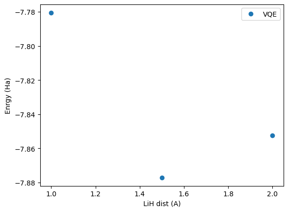

Tutorial: solving electronic structure problem¶
[2]:
import os
import matplotlib.pyplot as plt
from qiskit_ibm_runtime import QiskitRuntimeService
from qiskit_nature.drivers import Molecule
from qiskit.algorithms.optimizers import SPSA
from quantum_serverless import QuantumServerless
[3]:
import sys
sys.path.append("./source_files/")
from source_files.electronic_structure_problem import electronic_structure_problem
Overview¶
This is overview architecture of this demo

Implementation¶
Let’s see how we can implement this. For full implementation see here.
from quantum_serverless import run_qiskit_remote, get
@run_qiskit_remote()
def ground_state_solve(
molecule: Molecule,
initial_point: Union[List[float], np.ndarray],
options: Optional[Options] = None,
service: Optional[Union[QiskitRuntimeService, Dict[str, Any]]] = None,
):
driver = PySCFDriver.from_molecule(molecule=molecule, ...)
es_problem = ElectronicStructureProblem(driver, ...)
ansatz = ...
operator = qubit_converter.convert(es_problem.second_q_ops(), ...)
optimizer = COBYLA(maxiter=500)
...
with Session(service=service) as session:
estimator = Estimator(session=session, options=options)
vqe = EstimatorVQE(
estimator=estimator,
circuit=ansatz,
optimizer=optimizer,
init_point=initial_point,
)
vqe_result = vqe.compute_minimum_eigenvalue(operator)
return vqe_result.optimal_value
def electronic_structure_problem(
molecules: List[Molecule],
initial_points: Optional[List[List[float]]] = None,
service: Optional[QiskitRuntimeService] = None,
backends: Optional[List[IBMQBackend]] = None,
):
...
function_references = [
hardware_efficient_ansatz(
molecule=molecule,
initial_point=initial_point,
service=service,
)
for molecule, initial_point in zip(molecules, initial_points)
]
return get(function_references)
Execution¶
[4]:
# default initialization
serverless = QuantumServerless()
# from configuration object
config = {"providers": []}
serverless = QuantumServerless(config)
# from config file
serverless = QuantumServerless.load_configuration("./serverless_config.json")
serverless
[4]:
<QuantumServerless: providers [local, ibm], clusters [local, ibm_remote]>
[5]:
# get available providers
serverless.providers()
[5]:
[<Provider: local>, <Provider: ibm>]
[5]:
service = QiskitRuntimeService()
[6]:
names = ["ibmq_qasm_simulator", "ibmq_qasm_simulator", "ibmq_qasm_simulator"]
backends = [service.backend(name) for name in names]
backends
[6]:
[<IBMBackend('ibmq_qasm_simulator')>,
<IBMBackend('ibmq_qasm_simulator')>,
<IBMBackend('ibmq_qasm_simulator')>]
[ ]:
# %%capture
with serverless: # or serverless.provider("ibm")
energies = electronic_structure_problem(
molecules=[
Molecule(geometry=[("H", [0.0, 0.0, 0.0]), ("Li", [0.0, 0.0, 1.0])], charge=0, multiplicity=1),
Molecule(geometry=[("H", [0.0, 0.0, 0.0]), ("Li", [0.0, 0.0, 1.5])], charge=0, multiplicity=1),
Molecule(geometry=[("H", [0.0, 0.0, 0.0]), ("Li", [0.0, 0.0, 2.0])], charge=0, multiplicity=1),
],
initial_points=[
[0.1, 0.1, 0.1, 0.1],
[0.01, 0.01, 0.01, 0.01],
[0.001, 0.001, 0.001, 0.001],
],
service=service,
backends=backends,
optimization_level = 1,
resilience_level = 1,
shots=4000,
optimizer=SPSA()
)
[7]:
print("Energies: ", [e[0] for e in energies])
print("Shifts: ", [e[1] for e in energies])
print("Energy + shift: ", [e[0] + e[1] for e in energies])
Energies: [-1.1707744855994744, -1.095140570899344, -0.98185028319679]
Shifts: [-6.609784771130333, -6.781951626949075, -6.870414678425503]
Energy + shift: [-7.780559256729807, -7.87709219784842, -7.852264961622293]
[8]:
dist = [1.0,1.5,2.0]
plt.plot(dist, [e[0] + e[1] for e in energies], 'o', label = 'VQE')
plt.xlabel('LiH dist (A)')
plt.ylabel('Enrgy (Ha)')
plt.legend()
plt.show()

[9]:
for i, bond_l in enumerate([1.0, 1.5, 2.0]):
shift = energies[i][1]
history = [h[1] + shift for h in energies[i][2]]
plt.plot(history, label=f"Bond length: {bond_l}")
plt.title("Optimization history")
plt.legend()
plt.show()